The overall look and feel of the graph can be adjusted in a number of ways.
-
color of the plot area
-
color of the margin
-
size of the margin (and hence the position of the plot area)
-
title(s) of the graph, a graph can have both a "title", "subtitle" and a "subsubtitle"
-
drop shadow around the graph
-
adding how long time it took to generate the graph
The overall size of the graph is specified in the initial creation of the
"$graph" instance. This is mandatory.
1 | $graph = new Graph($width,$height); |
The margin determines the space between the edges of the plotarea and edge of the graph. Please note that the edge does not include the frame around the entire graph area, i.e. whatever weight the frame edge has it doesn't impact on the margin area. The margin is specified in the order left,right,top and bottom margin and the size is specified in pixels.
1 | $graph->SetMargin(30,10,40,20); |
The default margin will be as narrow as possible but still have enough space
to show the titles and labels. The final adjustments is wheter or not the graph
will have a frame or not. There are two distinctions to be made here. No frame
meaning that the margin area will not be colored (i.e. painted) and no frame as
in no edge around the graph area. The first case is achieved by calling the
SetFrame() method on the Graph class
1 | $graph->SetFrame(false); |
and the second case is achieved by setting the frame edge to have weight zero. Since the weight is given as the third argument we wtill have to put in valid "dummy" argument for the on/off flag and the frame color parameter.
1 | $graph->SetFrame(true,'black',0); |
Refer to Figure 12.1. Commonly used objects in a graph (common-obj-graph.php) for definitoin of plot aea
and margin.
A graph can have a drop shadow specified with the method
SetShadow() which has the signature
1 | SetShadow($aShowShadow=true,$aShadowWidth=5,$aShadowColor=array(102,102,102)) |
by default there will be no dropshadow. Note that the drop shadow is a straight simple shadow and has no Gaussian blur.
There are three possible standard titles in the graph
-
$graph->title -
$graph->subtitle -
$graph->subsubtitle
Each title is an instance of the Text class which means it supports the
standard text adjusting methods SetFont(), Set(),
SetColor() etc. The title s will be centered on the top of the
graph area with the title highest up, subtitle below and finally the subsubtitle
below that as shown in Figure 14.6. The various titles in a graph ( titleex1.php)
In addition to the above standard titles there is also another type of graph
titles called the "Tabular title". This is a title that sits directly on the
plot area looking like a "tab" in a sorting cabinet. Figure 14.7. Tabtitle and gradient background ( and Figure 14.8. Tabtitle and image marker in a line plot gradbkgex1.php)(
shows examples of this.imgmarkerex1.php)
|
|
|
These type of titles are created by using the
1 | $graph->tabtitle |
property in the Graph class. For example the tabtitle in Figure 7.2. Making use of transparency to combine two plots ( was generated by adding the linesbarlinealphaex1.php)
1 2 | $graph->tabtitle->Set('Year 2003');
$graph->tabtitle->SetFont(FF_ARIAL,FS_BOLD,10); |
There is one more way to make the graph title stand out that. This feature is probably one of the least known ways to adjust the graph title and is used to put a lot of emphasis on the title by having a separate color (and style) for the background of the graph title.
Note
This feature was added by the request of one of our users who had a company design policy that demanded these type sof formatting options for graphs.
The two methods used to control this style are
-
Graph::SetTitleBackground($aBackColor='gray', $aStyle=TITLEBKG_STYLE1, $aFrameStyle=TITLEBKG_FRAME_NONE, $aFrameColor='black', $aFrameWeight=1, $aBevelHeight=3, $aEnable=true)This method is the basic method to specify a solid color background with the defined style and type of framing. The first style paramatere specifies the extension of the background and how it interacts with the frame around the image.
-
TITLEBKG_STYLE1, The title frame will be drawn inside the overall graph frame -
TITLEBKG_STYLE2, The title frame will extend all the way to the edge of the graph and overwrite any graph frame -
TITLEBKG_STYLE3, This is the same as TITLEBKG_STYLE2 apart from when it is used together with framestyle TITLEBKG_FRAME_BEVEL then the bevel frame border is on top of the title frame border
-
-
Graph::SetTitleBackgroundFillStyle($aStyle,$aColor1='black',$aColor2='white')The method determines adjusts the way the background of the title is filled by allowing a simple pattern filling to be set. This pattern filling is either horizontal or vertical stripes (lines) with user selectable colors. The possible patterns are
-
TITLEBKG_FILLSTYLE_HSTRIPED, The background will have horizontal stripes with$aColor1on a background with$aColor2 -
TITLEBKG_FILLSTYLE_HSTRIPED, The background will have vertical stripes with$aColor1on a background with$aColor2 -
TITLEBKG_FILLSTYLE_SOLID, The background will only have one color specified as$aColor1
-
To better show the effect of the possible combinations the table below shows a matrix of the possible combinations and the resulting styles. To keep the table small only the relevant top are of the graph with the title is shown.In addition to keep the style simple we have only used shades of gray.
| Frame/Fill style |
|
|
|
|
TITLEBKG_STYLE1, TITLEBKG_FRAME_NONE |
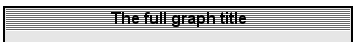 |
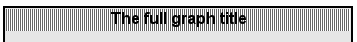 |
|
|
TITLEBKG_STYLE2, TITLEBKG_FRAME_NONE |
|
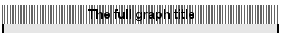 |
|
|
TITLEBKG_STYLE3, TITLEBKG_FRAME_NONE |
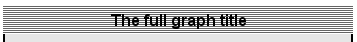 |
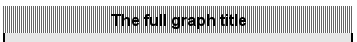 |
|
|
TITLEBKG_STYLE1, TITLEBKG_FRAME_FULL |
|
|
|
|
TITLEBKG_STYLE2, TITLEBKG_FRAME_FULL |
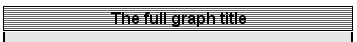 |
|
|
|
TITLEBKG_STYLE3, TITLEBKG_FRAME_FULL |
|
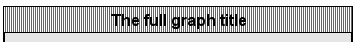 |
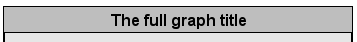 |
|
TITLEBKG_STYLE1, TITLEBKG_FRAME_BOTTOM |
|
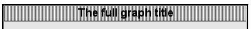 |
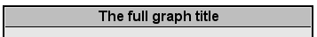 |
|
TITLEBKG_STYLE2, TITLEBKG_FRAME_BOTTOM |
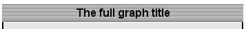 |
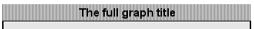 |
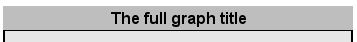 |
|
TITLEBKG_STYLE3, TITLEBKG_FRAME_BOTTOM |
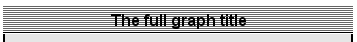 |
|
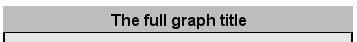 |
|
TITLEBKG_STYLE1, TITLEBKG_FRAME_BEVEL |
|
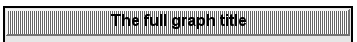 |
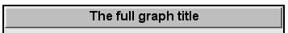 |
|
TITLEBKG_STYLE2, TITLEBKG_FRAME_BEVEL |
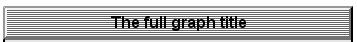 |
|
|
|
TITLEBKG_STYLE3, TITLEBKG_FRAME_BEVEL |
|
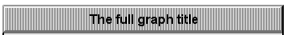 |
|

Note
There is a change in the behaviour of the latest GD library that causes style 2 and style 3 in JpGraph 2.x to be more or less visually identical as can be seen above. Using 1.x will more clearly show the difference. The reason is that with JpGraph 2.x we rely more heavily on the GD built in functions while in 1.x many of the functions where instead implemented in the library (since they weren't earlier available in GD 1.x). The change in JpGraph 2.x was made to increase the performance, unfortunately some minor differences exist in the way GD 2.x handles border line cases as how to handle pixel-by-pixel accuracy (or convention). Over time these changes will become less and less as parts of the library will be adjusted to the new GD 2.x behaviour.
A typical example of changed behaviour is how rectangles with thickness > 1 are positioned. The library assumes that the top left (0,0) corner is the very top left part of the rectangle. This is not so with GD 2.x. Instead (0,0) is the center point on the line. If the line has thickness=1 they are identical but not if the line has a thickness > 1
As described in Necessary system requirements for the library the actual image compression
available depends on the system setup. Assuming the needed sewtup is done then
the image format can be specified by using the method
Graph::SetImgFormat() and specifying the wanted format as a
string. For example as
1 | $graph->SetImgFormat('jpg',80); |
The method call above selects JPEG image compression algorithm and tells the algorithm to set the quality parameter to 80%. This additional parameter is only applicable together with JPG formatting.
Any lines in the library can have a number of formatting option. Attributes that can be adjusted are
-
Lineweight (thickness). The weight is specified in pixels and can be any integer values
-
Linestyle , (dashed, dotted, solid etc). The style is specified as a string using the line method
SetLineStyle().The available line styles are
-
'solid', A solid line
-
'dotted', A line with dots
-
'dashed', A line with short hyphens
-
'longdashed', A line with long hyphens
For example to following method call set the y-grid to use the "dotted" style
1
$graph->ygrid->SetLineStyle('dotted');The image in Figure 14.9. Different line formatting shows example of different line formatting styles
Figure 14.9. Different line formatting
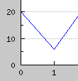
Standard
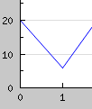
Anti-aliased
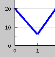
Thick (3 pixels)

Dashed
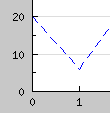
Long-dash

Dotted
-
-
Color. The line color is (as usual) adjusted with the method
SetColor().For example the following line sets the color of the x-grid to lightblue.
1
$graph->xgrid->SetColor('lightblue');
Note
If anti-aliasing is enabled (see ??.) then all line weights will always be interpreted as having weight 1 regardless.
Tip
To avoid drawing a line set the line weight to 0
It is possible to add a footer to the graph as well. The footer can have a
left, center and right part. The footer is accessed trough the footer property
of the Graph class and its three parts "left", "right" and "center". These parts
are instances of the Text class and hence all normal text
formatting c an be applied to each part of the footer. The following code
snippet shows how the footer parts can be set.
1 2 3 | $graph->footer->left->Set('Left footer');
$graph->footer->center->Set('Center footer');
$graph->footer->right->Set('Right footer'); |
An example of using a footer is shown in Figure 14.11. Adding a left,right and center footer ( footerex1.php)
The footer in the bottom of the graph can also be used to show an
approximative timing of the graph generation. This is done with the help of
class JpgTimer. This timer class offers two methods
-
JpgTimer::Push(), Starts a new timer and puts it at the top of the timer stack -
JpgTimer::Pop(), Pops the timer at the top of the stack and returns the time (in ms) since the timer was pushed
(The stack based design makes it possible to have multiple timers running at the same time without interfering each other.)
The footer class (Adding a footer to the graph) have a special provision to handle an instance of the timer class
-
Footer::SetTimer($aTimer,$aSuffix='')$aTimer, an instance of JpgTimer$aSuffix, an optional suffix string that will be added at the end of the timing value
At the end of the graph generation the specified timer will be sent the sign pop and the resulting timer value will be stored in the right footer of the graph (appended to any previous value in the footer). For example the following simple lines would time the graph generation.
1 2 3 4 5 6 7 8 9 10 11 12 13 14 15 16 17 18 19 20 | // Create a new timer instance $timer = new JpgTimer(); // Start the timer $timer->Push(); // Create the graph. These two calls are always required $graph = new Graph(300,200); $graph->SetScale("textlin"); // Make the bottom margin large enough to hold the timer value $graph->SetMargin(40,20,20,60); $graph->title->Set("Timing a graph"); $graph->footer->right->Set('Timer (ms): '); $graph->footer->right->SetFont(FF_COURIER,FS_ITALIC); $graph->footer->SetTimer($timer); // The rest of the script as normal .. |
Note
Remember to make the bottom margin large enough.
Figure 14.12. Adding a timer to the graph (in the footer) ( shows an example of using a timer to add
the time (in ms) it took to generate the graphexample11.php)